@geonews_urdu
📝 原文: The Mecca Defense Pact... Is Pakistan also about to become part of a conflict?@SaleemKhanSafi
🇨🇳 译文: 麦加防御条约……巴基斯坦也即将成为冲突的一部分吗？@SaleemKhanSafi

🕒 2026-08-16T19:15:09+00:00
| 来源 | 旧窗口内数量 | 本次新增 | 本次淘汰 | 当前窗口内共有 |
|---|---|---|---|---|
| 推文 + Dawn 新闻 | 0 | 27 | 0 | 27 |
| ARY News | 0 | 0 | 0 | 0 |
注：淘汰数 = 旧窗口内数量 + 本次新增 - 当前窗口内共有
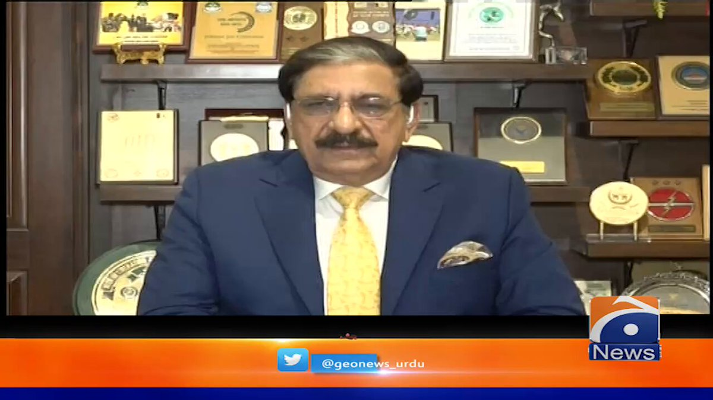


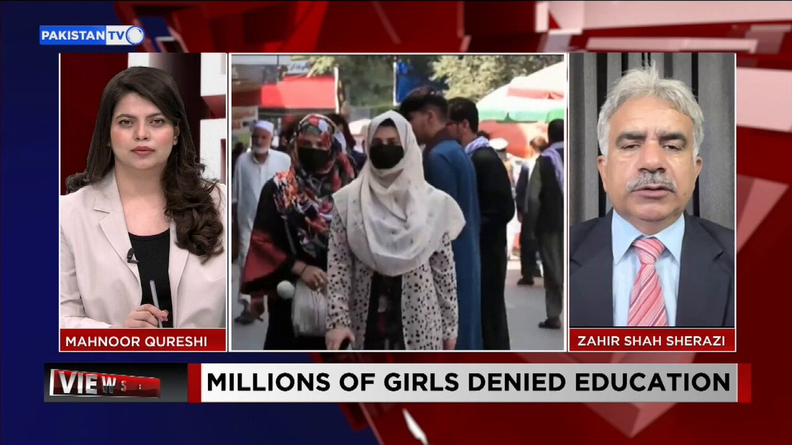
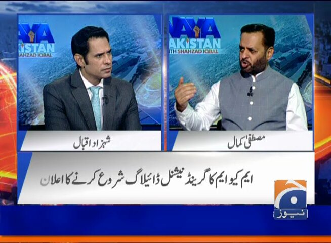
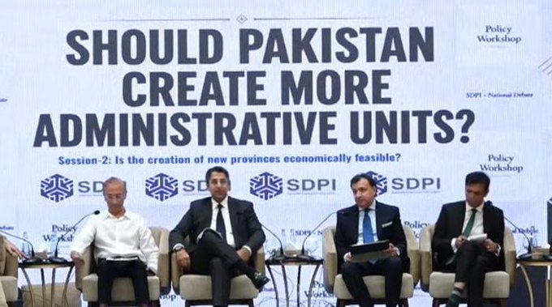


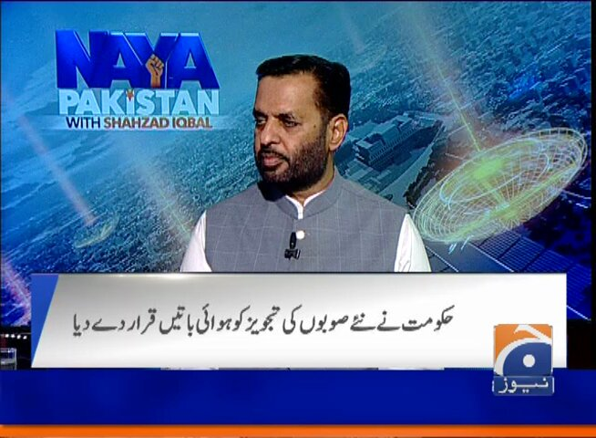
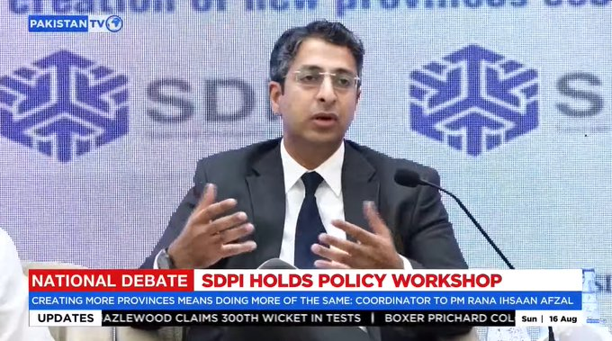
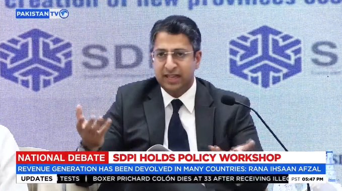
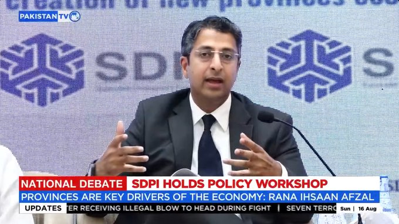
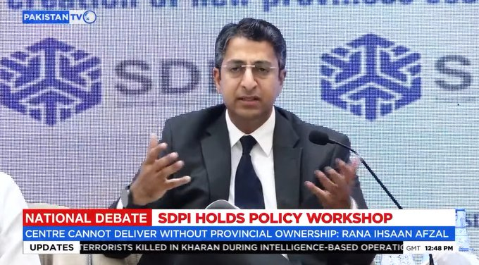
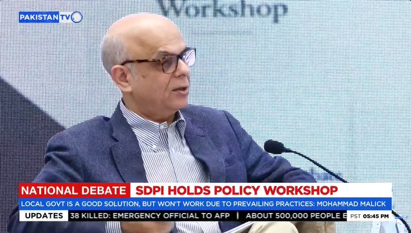
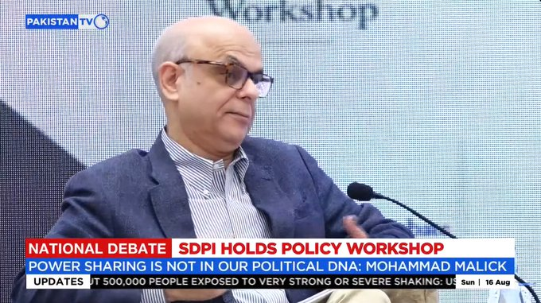
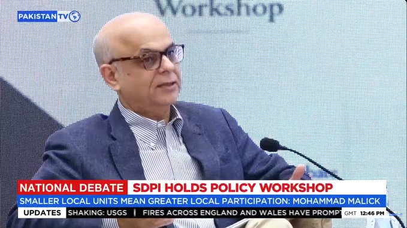
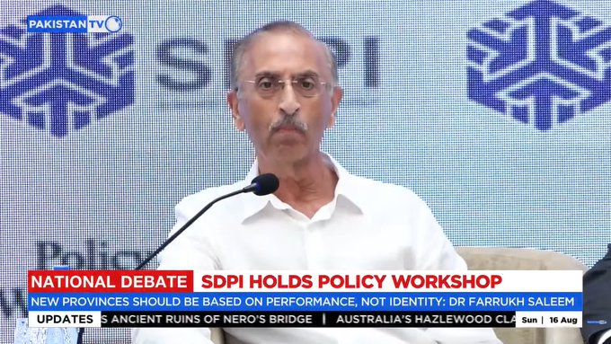
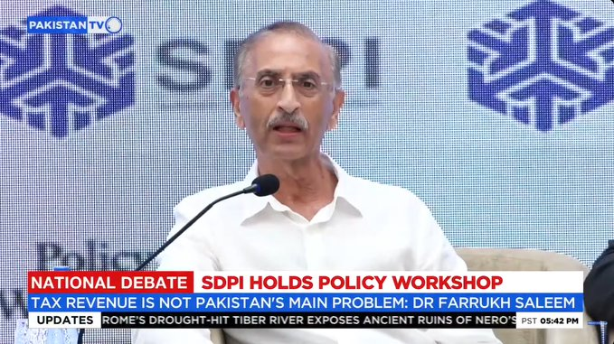
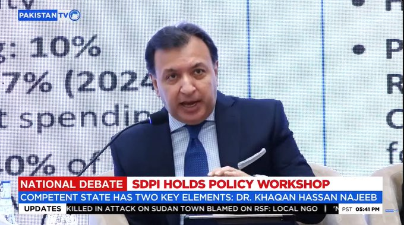
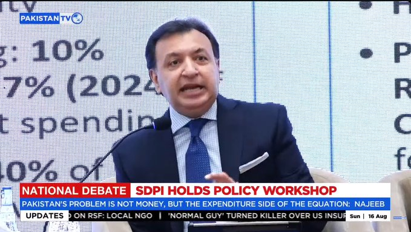
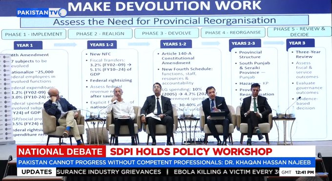
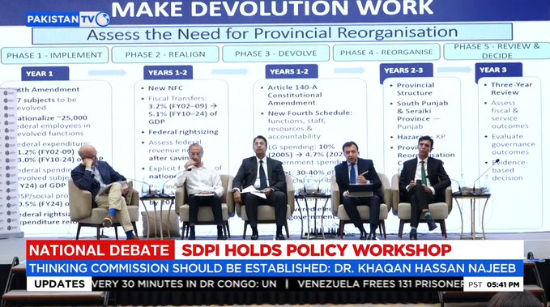
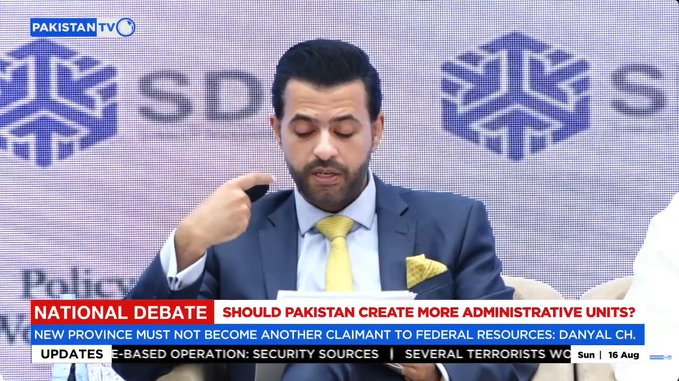
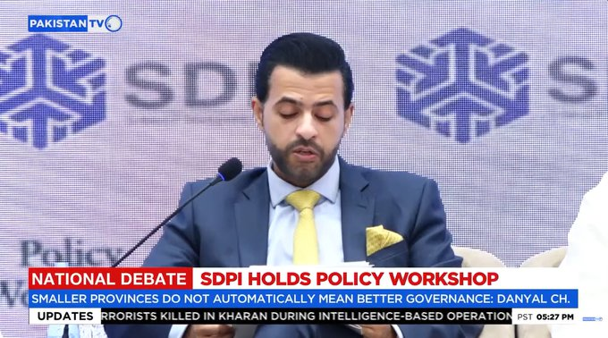
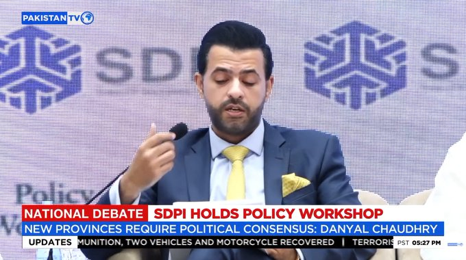
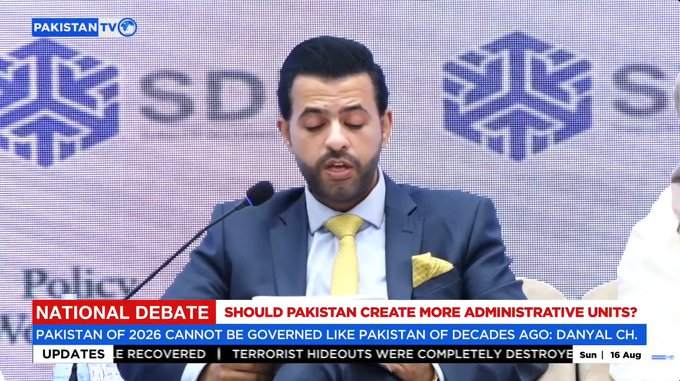


暂无文章。